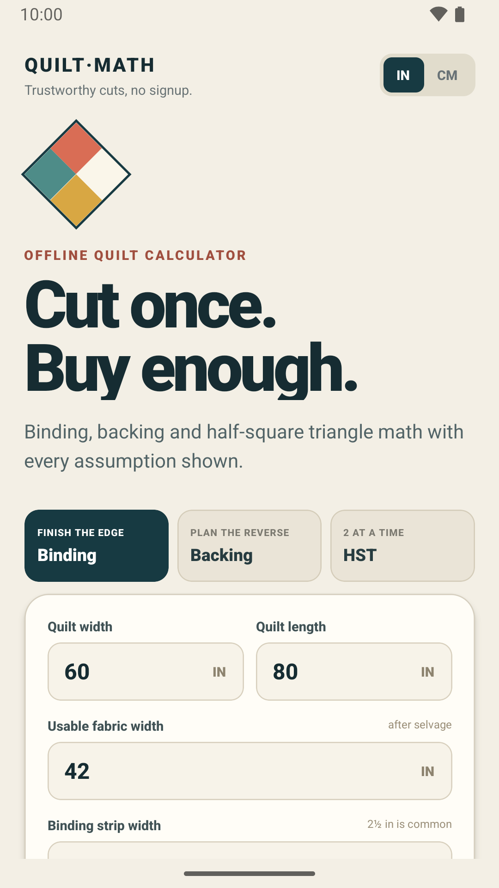

QuiltMath 1.3.3
This build corrects the launcher icon and strengthens accessibility and Premium-state behaviour while the app continues through Google Play testing.

What changed
- The Android launcher icon now uses the intended adaptive diamond artwork instead of appearing as a plain square on affected launchers.
- Screen-reader labels and interaction descriptions were improved.
- Premium ownership is made available more reliably immediately after startup.
Release status
Version 1.3.3, version code 10, is in Google Play Closed testing. It is not yet presented here as a public Production release.
What remains the same
The calculators, saved projects and printable cutting-sheet workflow keep the same data model and local-first behaviour. This release focuses on presentation and reliability rather than changing the underlying quilting formulas.